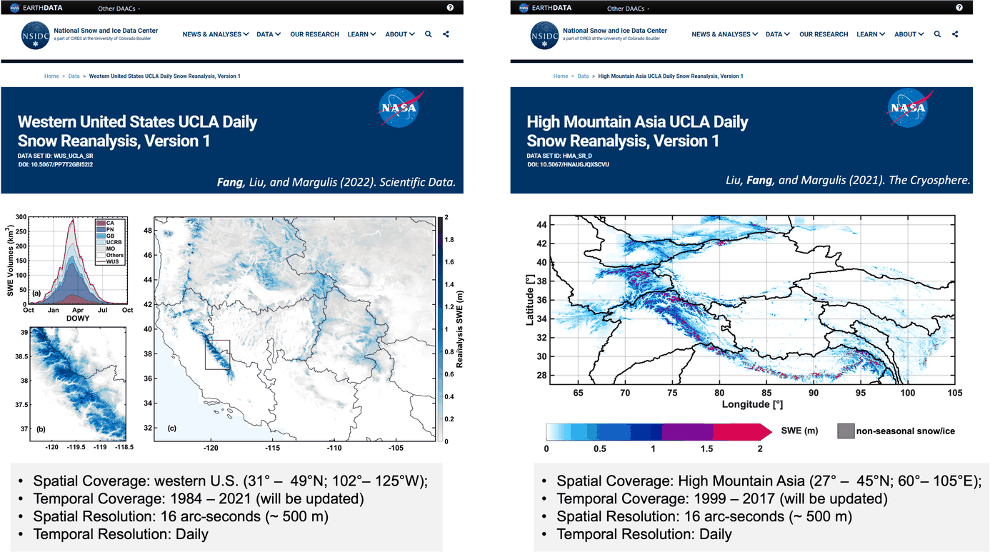
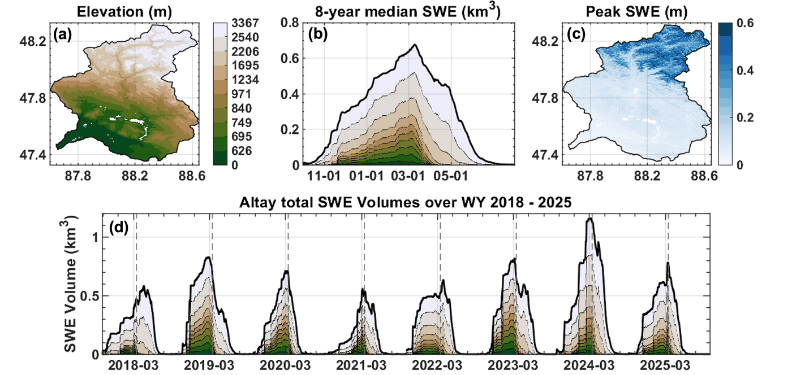

Yiwen FangZJU–UIUC Institute · Zhejiang University
Yiwen Fang
Postdoctoral Researcher, ZJU–UIUC Institute Ph.D. Civil Engineering, UCLA, 2023
My research advances the monitoring of surface water resources by combining satellite
remote sensing, physics-based modeling, and LLM-powered scientific computing.
The foundation of my work is high-resolution mountain snow water estimation through Bayesian data
assimilation. I develop sub-kilometer snow water datasets across the western United States, High
Mountain Asia, and the Altay Mountains, from modeled estimates constrained by Landsat and MODIS
retrievals.
Building on that foundation, my current work develops AI-enabled scientific computing systems —
the Remote Sensing Hub (RSHub) and PhysEarth-Agent — that make physics-based Earth models accessible
through natural language while keeping their scientific basis traceable and their results
verifiable.
Snow hydrology · Bayesian data assimilation · microwave
remote sensing · land surface modeling · LLM-powered Earth agents
Selected work
Datasets · Data assimilation · Land surface modeling
Snow Reanalysis — Western U.S. & High Mountain Asia

Space–time continuous daily snow water reconstruction at 480 meters — across
the Landsat era over the western United States, and the MODIS era over High Mountain Asia with
Liu et al.
Built on the snow reanalysis framework developed in Steven A. Margulis's group
at UCLA. Archived at NASA NSIDC and still in use.
Bayesian ensemble assimilation · Landsat & MODIS · snow water equivalent
Datasets · Data assimilation · Land surface modeling
Altay Snow Reanalysis — Xinjiang

Space–time continuous daily snow water equivalent at 150 meters for water
years 2018–2025, assimilated from Harmonized Landsat and Sentinel snow cover. Archived on
Figshare.
Current work evaluates InSAR-derived ΔSWE as an independent constraint.
NSFC Young Scientists Fund · field campaigns 2025 · Harmonized Landsat and Sentinel
Microwave scattering models for soil, vegetation, and snow, behind one
conversation. Built and led with undergraduate and graduate students; publicly deployed.
Microwave scattering models · soil, snow, vegetation · brightness temperature and backscatter
What spatial resolution do global products need to distribute snow water reasonably?
Finer than about 10 km to recover the storage, and finer than about 5 km to
place it correctly. Coarse products lose half the peak volume and flatten the windward–leeward
contrast that orography imposes — the Sierra ratio falls from 3.74 to 1.08.
Western U.S. & Andes · intercomparison · precipitation forcing as the dominant term
Figures from Fang, Liu, Li, Sun & Margulis (2023), CC BY 4.0.
Selected publications
2025Fang, Y., Chen, K., Bai, X., Cao, Y., Du, J., Haider, I., … & Tan, S. RSHub: a remote sensing hub for geophysical microwave scattering modeling. IEEE Geoscience and Remote Sensing Magazine, 13(4), 406–413. doi:10.1109/MGRS.2025.3540538
2025Sun, H., Fang, Y., Margulis, S. A., Mortimer, C., Mudryk, L., & Derksen, C. Evaluation of the Snow CCI snow-covered area product within a mountain SWE reanalysis. The Cryosphere, 19(6), 2017–2036. doi:10.5194/tc-19-2017-2025
2023Fang, Y., Liu, Y., Li, D., Sun, H., & Margulis, S. A. Spatiotemporal snow water storage uncertainty in the midlatitude American Cordillera. The Cryosphere, 17(12), 5175–5195. doi:10.5194/tc-17-5175-2023
2022Fang, Y., Liu, Y., & Margulis, S. A. A western United States snow reanalysis dataset over the Landsat era from water years 1985 to 2021. Scientific Data, 9(1), 677. doi:10.1038/s41597-022-01768-7
2022Liu, Y., Fang, Y., Li, D., & Margulis, S. A. How well do global snow products characterize snow storage in High Mountain Asia? Geophysical Research Letters, 49(16), e2022GL100082. doi:10.1029/2022GL100082
2019Margulis, S. A., Fang, Y., Li, D., Lettenmaier, D. P., & Andreadis, K. The utility of infrequent snow depth images for continuous estimates of seasonal SWE. Geophysical Research Letters, 46(10), 5331–5340. doi:10.1029/2019GL082507